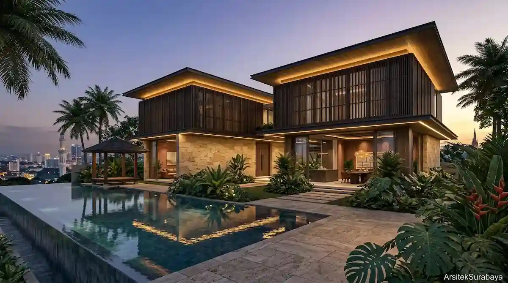
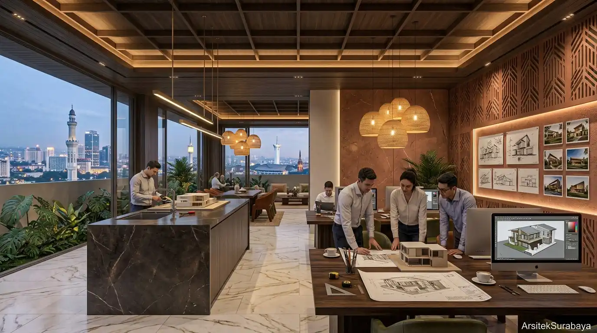
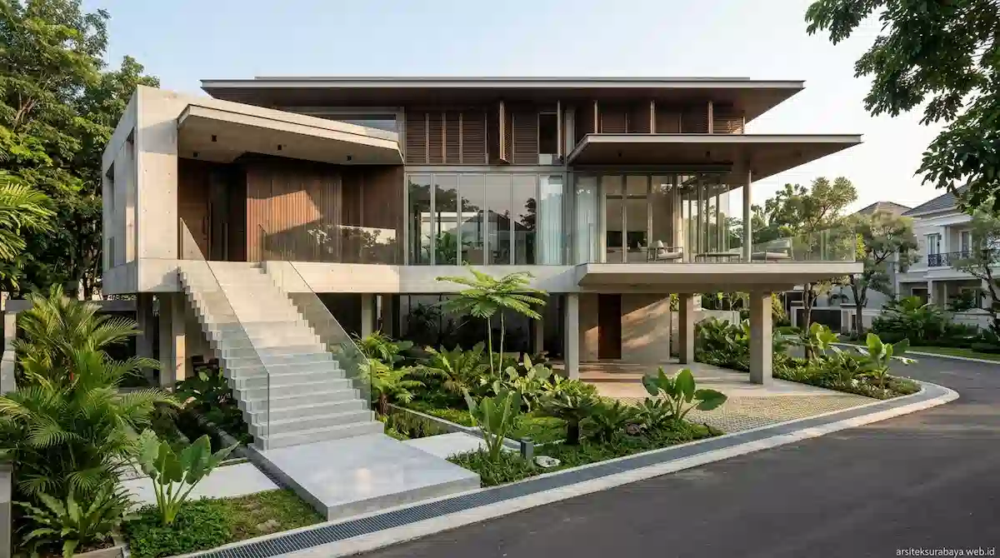
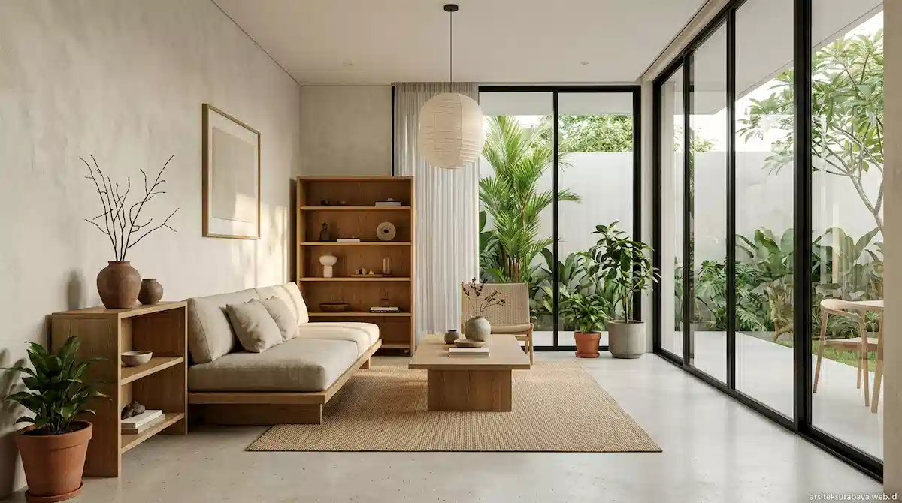
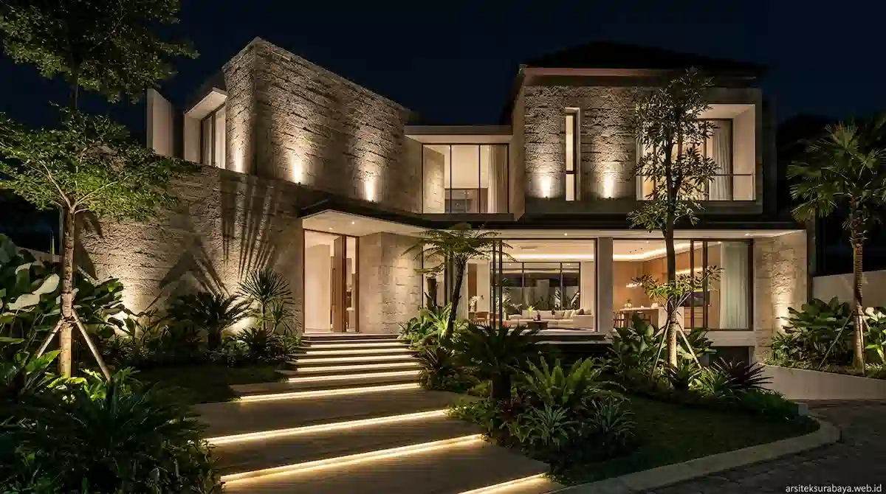

Residensial

Citraland Tropical House
Surabaya Barat
Hunian tropis 2 lantai berkonsep terbuka dengan pencahayaan alami dan void sirkulasi udara maksimal.

Solusi Perancangan Hunian dan Bangunan Komersial Berkelas di Surabaya
Pengunjung Bulanan
Projek Selesai
Penghargaan Desain
Arsitek Tim Profesional

Kami adalah tim studio arsitektur berpengalaman di Surabaya yang mengombinasikan estetika tropis, kenyamanan fungsi ruang, dan efisiensi biaya.
Karya Perancangan Arsitektur & Interior
Surabaya Barat
Hunian tropis 2 lantai berkonsep terbuka dengan pencahayaan alami dan void sirkulasi udara maksimal.

Surabaya Pusat
Konsep studio kerja komersial efisien energi dengan tampilan fasad modern bernuansa earthy tone.

Surabaya Barat
Perancangan arsitektur minimalis mewah dengan paduan ornamen batu alam dan kayu bernuansa hangat.
Wawasan Perancangan & Perhitungan Pembangunan

Panduan teknis arsitektur merancang rumah bebas banjir di Surabaya: peninggian peil lantai, sumur resapan bio-retensi, dan sistem drainase.

Kiat menerapkan gaya interior Japandi (Japanese-Scandinavian) yang hangat, minimalis, dan fungsional untuk hunian modern di Surabaya.

Kiat merancang sistem lighting eksterior untuk menonjolkan estetika fasad malam hari, meningkatkan keamanan, dan hemat energi.
4 Langkah Mudah Mewujudkan Bangunan Impian
Diskusi kebutuhan ruang, gaya arsitektur, dan batas anggaran (budget) Anda.
Penyusunan denah tata ruang presisi sesuai fungsi dan kriteria sirkulasi udara.
Pembuatan bentuk fasad 3D photorealistic untuk visual gambaran asli bangunan.
Penyerahan dokumen teknis untuk IMB/PBG serta estimasi RAB konstruksi.
Apa Kata Mereka tentang Kami
"Tim Arsitek Surabaya sangat profesional. Desain rumah tropis kami di Citraland sirkulasi udaranya dingin sekali tanpa banyak pakai AC."
"Perhitungan RAB-nya sangat akurat dengan estimasi tukang di lapangan. Sangat terbantu untuk proyek studio kantor kami di Raya Darmo."
"Hasil render 3D-nya presisi sekali dengan bangunan yang sudah jadi. Komunikasi lancar dan pengerjaan dokumen teknis cepat."
Frequently Asked Questions
Konsultasikan kebutuhan perancangan arsitektur, desain interior, hingga perhitungan RAB presisi bersama tim kami.
Lihat Layanan Lengkap Kami